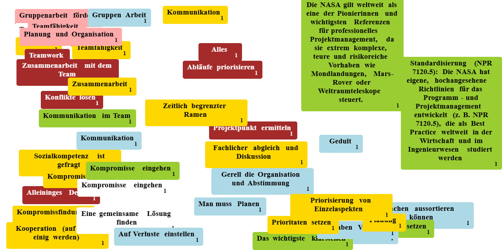

Tiefgreifendes Expertenwissen und absolute Verlässlichkeit für Ihre anspruchsvollsten Projekte. Wenn Scheitern keine Option ist, sind wir Ihr Partner.
Lernen Sie uns kennenNovaTrack Consulting wurde aus einer simplen, aber entscheidenden Erkenntnis heraus gegründet: Je komplexer die technologische und wirtschaftliche Welt wird, desto größer ist das Risiko für kostspieliges Projektversagen. Ohne ein exzellentes Management verläuft die Umsetzung chaotisch.
Unsere Unique Selling Proposition (USP): Wir sind nicht nur Berater, wir sind Umsetzungspartner. Wir vereinen strikte methodische Präzision (nach DIN-Normen) mit agiler Flexibilität. Wir garantieren absolute Transparenz, Termintreue und Kosteneffizienz – selbst unter extremsten Rahmenbedingungen. Wir übernehmen die Führungsaufgaben, die Organisation und die Steuerung, damit Sie sich auf Ihr Kerngeschäft konzentrieren können.
Im Rahmen der Vorbereitungen zur Artemis-Mission stand ein Zulieferer der NASA vor einer immensen Herausforderung: Die Entwicklung eines neuen Mikro-Telemetrie-Sensor-Arrays drohte aufgrund massiver Ressourcenengpässe den strikten Starttermin zu gefährden.
"Absolute Verlässlichkeit unter Schwerelosigkeit."

Fundiertes Wissen nach Industriestandards, erweitert um modernste Best Practices für Ihren Erfolg.
Ein Projekt ist ein zielgerichtetes, einmaliges Vorhaben. Nach DIN 69901 ist es gekennzeichnet durch die Einmaligkeit der Bedingungen in ihrer Gesamtheit.
Da Projekte begrenzte Ressourcen haben, bewegt sich das Management im Spannungsfeld dreier Hauptziele, um Kundenzufriedenheit zu garantieren:
Getragen durch gute Teamarbeit.
Es ist die Gesamtheit von Führungsaufgaben, -organisation und -techniken für die Initiierung, Planung, Steuerung und den Abschluss von Projekten.
Die reine Wasserfall-Methode (DIN-Klassik) reicht heute oft nicht mehr aus. Wir integrieren Scrum- und Kanban-Elemente in traditionelle Strukturen. Dies ermöglicht schnelle Kurskorrekturen bei veränderten Anforderungen, ohne das Endziel aus den Augen zu verlieren.
Probleme zu lösen ist gut, sie zu verhindern ist besser. Wir implementieren bei Projektstart eine systematische Risikoanalyse (FMEA) und definieren präventive Maßnahmen sowie Notfallpläne, lange bevor ein Risiko zum akuten Problem wird.
Die besten Projektpläne scheitern, wenn die Kommunikation fehlt. Wir sorgen durch strukturierte Status-Reports, transparente Dashboards und regelmäßige Meilenstein-Reviews dafür, dass Auftraggeber, Team und externe Partner stets synchronisiert sind.